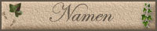

|





 |

-
Abkürzungen
In vielen alten Kirchenbucheinträgen wird das Abkürzungszeichen "l" an
die Stelle des heutigen Punktes gesetzt.
Beispielsweise: Hl = Herr
gebl = geboren
weil. = weiland = ehemals
ehel = eheleiblicher Sohn/Tochter
-
Aboville
Dies
ist ein System, mit dem man die Nachfahren einer Person eindeutig
nummeriert. Das erste Zeichen im "Code" ist immer ein Buchstabe. Dieser
Buchstabe (A) kennzeichnet die Generation des Probanden. Er enthält den
jeweils ältesten Vorfahren der Linie den sogenannten SPITZENAHN. Seine Kinder
erhalten den Buchstaben B (also B 1, B 2, ...),Die Enkelkinder erhalten
den Buchstaben C und eine Nummer, die sich aus der Nummer ihres Vorfahren
sowie einer durch einen Punkt abgetrennten fortlaufenden Nummer
zusammensetzt.
Bei den nachfolgenden Generationen
wird entsprechend fort gefahren. Das Ganze sieht dann etwa so aus:
>1. Generation: A (Spitzenahn)
>2. Generation: B1 B2 B3
>3. Generation: C1.1 C1.2 C2.1 C3.1
>4. Generation: D1.1.1 D1.2.1 D2.1.1 D2.1.2 D3.1.1
>usw.
Je mehr Generationen existieren, um so länger wird die Zahlenreihe. Das
sieht dann zwar verwirrend aus, hat aber den Vorteil, dass man die
Verwandtschaftsverhältnisse zum Spitzenahn quasi rückwärts lesen kann. So
ist zum Beispiel D.1.2.1 das erste Kind des zweiten Kindes des ersten
Kindes des Spitzenahnen. D2.1.1 ist hingegen das erste Kind des ersten
Kindes des zweiten Kindes des Spitzenahnen.
-
ADB -
Allgemeine Deutsche Biographie (1873-1912)
"Kulminiertes Register" der Personenartikel
in Maskenabfrage, völlig frei online-zugänglich zählt auch international
zu den grössten historisch-biographischen Lexika. Von 1875 bis 1912 wurden
von der Historischen Kommission bei der Bayerischen Akademie der
Wissenschaften 56 Bände mit insgesamt mehr als 26.500 Artikeln
herausgegeben
(http://mdz2.bib-bvb.de/ndb/ndbindex.htm/ndbmaske.html
-
Adjuvant
Gehilfe
-
Ahnengemeinschaft:
haben zwei - von einem gleichen Probanden abstammende Nachkommen, wobei
die jeweilige - auch unterschiedliche Generationszahl, in denen sie selber
vorkommen - keine Rolle spielt
-
antea deflorata et quidem
olim alio:
"die früher entjungferte, und zwar damals von einem anderen"
-
Auszügler:
ist ein Bauer, der sein Gut an
seine Erben übergeben oder an Dritte verkauft hat und aufgrund seiner
Auszugsrechte auf dem Altenteil des Hofes lebte -
einem Geschoß des gleichen Hauses oder einem separaten Gebäude. Er wurde
dort vom neuen Besitzer, meist Sohn oder Schwiegersohn, mit einer
vertraglich vereinbarten Menge an Naturalien (dem Auszug)
versorgt.
-
Aszendenz:
Die Aszendenz (Erfassung der Vorfahren)besteht aus den natürlichen Eltern, Großeltern und
den weiteren Vorfahren eines Probanden. Die Anzahl der Personen in jeder
Generation verdoppelt sich in jeder zeitlich nachfolgenden Generation. Die
Darstellung der Aszendenz erfolgt in Form einer Vorfahren-
bzw. Ahnentafel oder Ahnenliste.
-
Consens:
Einwilligung
-
Choradjuvant:
bezahlter Kirchenchorsänger
-
Deszendenz:
Die Deszendenz wird die gesamte Nachkommenschaft einer Person oder
eines Ehepaares, der "Stammeltern", bezeichnet. Ihre Darstellung erfolgt
in Form der Nachfahrentafel oder Nachfahrenliste. Sie umfasst
auch die Töchternachkommen anderen Namens. Dagegen erfolgt die Darstellung
einer auf den Mannesstamm beschränkten Nachkommenschaft, eines
"Geschlechtes", in Form einer Stammtafel oder Stammliste.
Sie umfasst nur die Träger des Stammesnamens mit deren Ehegatten. Auch für
die Darstellung der Deszendenz kann entweder die Tafelform oder die
Listenform gewählt werden.
-
Dispens:
Befreiung/Entbindung von einer Verpflichtung bzw. eine
Einzelaufhebung eines Gesetzes
beispielsweise war ein Ehedispens die Befreiung von dem Gesetz, keine
Verwandten heiraten zu dürfen. Dieses Dispenses bedurften beispielsweise
Cousin und Cousine, wenn sie heiraten wollten.
In der kath. Kirche hat
grundsätzlich der Papst die Vollmacht, von Ehehindernissen zu
dispensieren. Er delegiert diese Vollmacht aber an den zuständigen
Bischof, dieser wiederum lässt sich durch seinen Generalvikar vertreten.
Allerdings bei einem Hindernis der Blutsverwandtschaft im 2. Grad wurde
nur von Rom dispensiert. Ein Hindernis der Blutsverwandtschaft im 1. Grad
wurde nie dispensiert.
Dispens-Abkürzungen
DvBl = Dispens vom Hindernis der
Blutsverwandtschaft
DvSchw = Dispens vom Hindernis der Schwägerschaft
DvA = Dispens vom Aufgebot
DgV = Dispens vom Hindernis der geistigen Verwandtschaft
DvgZ = Dispens von geschlossener Zeit
Gr = Grad der Verwandt- oder Schwägerschaft
u. = und a. = aus Wwe = Witwe
Wwr = Witwer
-
ejusten Þ
eiusdem = Genitiv Singular von idem, eadem
= desselben, derselben.
Oft wir das in KB auch abgekürzt geschrieben :
"ej." oder "ejd"
-
IMHO
in my humble opinion - meiner unmaßgeblichen Meinung nach
-
Filiation:
[Nachweis der] Abstammung einer Person von einer anderen.
-
filiola - filia
Tochter
-
filiolus -
filius
Sohn
-
Genealogie:
Familien- und Geschlechterforschung.
-
Generationszahl:
Die Elterngeneration ist dabei die 1.(!) Generation. Diese Festlegung
sollte einheitlich für die gesamte Genealogie gelten (nicht nur für die
quantitative), da dann die Anzahl der (theoretischen) Ahnen innerhalb der
Generation auch der jeweiligen Zweierpotenz der Generationszahl entspricht
1).
Hier wird
erstmals zur Unterscheidung zwischen Vorfahren- und Nachfahrengeneration
vorgeschlagen, die Vorfahrengenerationen mit negativen und die
Nachfahrengenerationen mit positiven Vorzeichen zu versehen
(Gesamtverwandtschaft des Probanden!). Diese Bezeichnungsweise steht im
Einklang mit der Normung der fortschreitenden Zeit in Koordinatensystemen
(DIN 461).
-
Generationsübersicht
|
NAMEN |
GENERATION |
ANZAHL d.Personen |
ZIFFER |
| Proband |
|
1 |
1 |
| Eltern |
I |
2 |
2-3 |
| Großeltern |
II |
4 |
4-7 |
| Urgroßeltern |
III |
8 |
8-15 |
| Alteltern |
IV |
16 |
16-31 |
| Altgroßeltern |
V |
32 |
32-63 |
|
Alturgroßeltern |
VI |
64 |
64-127 |
| Obereltern |
VII |
128 |
128-255 |
|
Obergroßeltern |
VIII |
256 |
256-511 |
|
Oberurgroßeltern |
IX |
512 |
512-1023 |
| Stammeltern |
X |
1.024 |
1.024-2.047 |
|
Stammgroßeltern |
XI |
2.048 |
2.048-4.095 |
|
Stammurgroßeltern |
XII |
4.096 |
4.096-8.191 |
| Ahneneltern |
XIII |
8.192 |
8.192-16.383 |
|
Ahnengroßeltern |
XIV |
16.384 |
16.384-32.767 |
|
Ahnenurgroßeltern |
XV |
32.768 |
32.768-65.535 |
| |
|
|
|
-
Geschoss
veraltet für Steuern
-
Grotefend -
"Grotefend-Online":
"Zeitrechnung des Deutschen Mittelalters und der Neuzeit" von Hermann
Grotefend, 2 Bde, Hannover 1891-1898, Neudruck Aalen 1970. HTML-Version
von Dr. Horst Ruth.
Mit diesem großartigen Hilfsmittel ist
jeder von Euch in der Lage, seine Fragen zu Datumsumrechnungen,
kirchlichen Datumsanga-ben, und zu vielem anderen mehr online selbst zu
klären.
www.manuscripta-mediaevalia.de/Handschriften-Forum.htm
-
Implex:
Ahnengleichheit, beispielsweise infolge der Heirat von Cousin und Cousine
oder anderen Blutsverwandtschaften des Ehepaares.
-
Besonderheiten bei
Kirchenbucheinträgen:
Stehen Eintragungen auf dem Kopf, handelt es sich um unehelich geborene
oder Findelkinder, Selbstmörder, Ketzer, Hingerichtete oder an der
Menschen, die nicht ins religiöse Bild der damaligen Zeit passten und so
gekennzeichnet wurden.
Auch verschiedene andere Zeichen - beispielsweise eine Hand - deuten auf
irgendwelche "Missstände" zum Kirchenbucheintrag hin.
-
Länderabkürzungen:
POM Pommern
OBB Ostbrandenburg
OPR Ostpreußen
WPR Westpreußen
POS Posen
OSL Oberschlesien
NSL Niederschlesien
AL Elsaß
LO Lothringen
BÖH Böhmen
MÄH Mähren
BW Baden-Württemberg
BY Bayern
BL Berlin
BB Brandenburg
HB Bremen
HH Hamburg
HS Hessen
MV Mecklenburg-Vorpommern
NS Niedersachsen
NW Nordrhein-Westfalen
RP Rheinland-Pfalz
SL Saarland
SN Sachsen
SA Sachsen-Anhalt
SH Schleswig-Holstein
TH Thüringen
-
mit der Axt copuliert:
"Trauung mit der Axt" bedeutet Trauung
unter Zwang, wodurch verhindert werden sollte, dass der Mann sich der
Pflicht zur Vaterschaft entzieht. Sie erfolgte auf Befehl der weltlichen
Obrigkeit oder auf Anordnung der kirchlichen Amtsbehörde, um weiteres
öffentliches Ärgernis zu vermeiden.
-
altes Währungszeichen für Mark
-
Monatsbezeichnungen alt:
-
7ber steht für
septem, also sieben, für den Monat September
-
8ber steht für octo,
also acht, für den Monat Oktober
-
9ber steht für novem, also neun, für den Monat November
und
-
10ber, also decem,
zehn, für den Monat Dezember.
-
Nachfahren
Für die Nachfahrenliste haben sich bisher 2 Bezeichnungssysteme
durchgesetzt. Diese werden für patriarchalische oder nichtpatriarchalische
Systeme so eingesetzt
-
NN
lat. = nomen nescido - "den Namen
weiß ich nicht"
lat. = nomen nominandeum - "Name wird noch benannt"
lat. - nomen nominandum "der zu nennende Name unbekannt"
engl. = No Name = keinen Namen
-
Proband:
Ausgangspunkt einer Ahnentafel - also derjenige, für den eine Ahnentafel aufgestellt werden soll.
-
Quassowski-Kartei:
Hans Wolfgang Quassowski (*
27. Oktober 1890 in Harburg, † 25. November 1968 in Berlin) ist der
Autor der so genannten Kartei Quassowski. Die etwa 350.000 Eintragungen
umfassende Kartei ist in 50 Jahren aus weitgestreutem privaten
Forschungsinteresse entstanden. Sie schöpft zu einem großen Teil aus
nicht veröffentlichten und heute verlorenen Quellen und betrifft
vorwiegend Personen aus Ostpreußen. Die Kartei besteht aus Karteikarten,
auf denen Quassowski handschriftlich Fundstellen zu familienkundlichen
Daten vor allem aus Ostpreußen, aber auch Pommern, Danzig, Berlin und
Schlesien erfasst hat. Die Kartei wurde nach dem Tode Quassowskis vom
VFFOW als 24-bändiges Nachschlagewerk herausgegeben.
Quelle:
www.genealogy.net (Reinhard J. Freytag)
Namensregister:
http://www.kartei-quassowski.de.vu
-
Quellensammlung:
|
Adelskalender |
|
Adelsregister |
|
Adressbücher |
|
Allgemeine
deutsche Biographie ADB |
|
Archive |
|
Bürgerbücher |
|
Deutsche
Geschlechterbücher DGB |
|
Einwohnermelderegister |
|
Familienarchive |
|
Friedhöfe/Friedhofsverwaltung |
|
Genealogische Nachlässe |
|
Genealogische Vereine |
|
Gerichtsprotokolle |
|
Grundbücher |
|
Handwerkskammer |
|
Heimatmuseen |
|
Kirchenarchive |
|
Kirchenbücher |
|
Leichenpredigten |
|
Lokalzeitungen |
|
Militärlisten |
|
Pfarrchroniken |
|
private
Aufzeichnungen |
|
Schenkungsurkunden |
|
Standesamt |
|
Steuerlisten |
|
Universitätsmatrikel |
|
Urkunden |
|
Verwandte/Bekannte |
|
Zedlers
Lexikon |
|
Zeitungsarchive |
|
Zunftbücher |
-
Rufnamen:
Wie der Name
schon sagt, ist es der Name, mit dem das Kind täglich "gerufen" wurde,
also ganz unmittelbar, und ganz direkt. Dabei wird im Laufe des Lebens
dieser "Ruf" verändert, tendenziell:
- von lang zu kurz (Johannes -> Johann)
- von kompliziert zu einfach (Maximilian -> Max)
- von deutsch zu englisch (Friedrich -> Frederic)
...und alle möglichen anderen Veränderungen, auch rückwärts.
Erst spät haben sich in den Kirchenbüchern Zeichen und Bemerkungen
eingebürgert, schon bei der Taufe den 'gewollten' Rufnamen zu
bezeichnen, z.B. Untersteichungen. Doch, wie so oft im Leben, es blieb
nicht so bei den Kindern, wie´s die Eltern weiland einmal wollten. Das
praktische Leben ist allemal stärker als elterlicher Wille.
Somit ergibt sich für uns bei der Eintragung der Ruf-Namen, dass wir
zwar den bei der Taufe als solchen gekennzeichneten Namen als 'Rufnamen'
eintragen, nicht aber sicher sein können, diesen über die ganze
Lebenszeit des Probanten auch beibehalten zu können.
-
Sermon:
Predigt
-
Die
Spitzenahn
(auch "tote Punkte" genannt) Der älteste bekannte
Vorfahre in einer Familienlinie. Es gibt davon in jeweils in jeder
Familie einen.
-
Stammbaum:
Der Stammbaum ist die bildliche (baumförmige) Darstellung einer
Stammtafel. Auf dem Stammbaum werden die Personen eines Stammes
anders angeordnet als auf der Stammtafel. Da der Baum von unten
nach oben wächst, erscheint hier der Stammvater am untersten Teil des
Baumstammes, und die nächsten Generationen folgen aufwärts, werden als
Äste und Zweige seitwärts ausgestreckt, bis die jüngsten Sprossen als
Blätter erscheinen. Die künstlerische Darstellung eines Stammbaumes ist
abhängig von der individuellen Ausbreitung des darzustellenden
Familienstammes. Die jeweilige Ausbreitung eines Familienstammes kann
verschiedene Formen eines Stammbaumes bewirken.
-
Stammliste:
Für die Darstellung in Listenform ergeben sich zwei verschiedene
Möglichkeiten der Anordnung, nämlich die fortlaufende und die
unterbrechende Liste. Die fortlaufende Liste schließt jeder
Person sofort ihre gesamte Nachkommenschaft an, wobei jede Generation der
Gesamtliste um das gleiche Stück nach rechts eingerückt wird. Auf
den Stammvater folgt also z. B. sein ältester Sohn, dann – vielleicht über
mehrere Seiten – dessen Deszendenz und erst dann das zweite Kind
des Stammvaters, das wieder entsprechend seinem älteren Bruder nur wenig
eingerückt wird. Die unterbrechende Liste besteht dagegen aus
einzelnen Kleinfamilien (Eltern und Kindern). Dabei werden Kinder, deren
Nachkommenschaft dargestellt werden soll, nur kurz mit Hinweis auf die
folgenden Kleinfamilien erwähnt und dort ausführlich mit ihren Kindern
genannt, während die nächsten Generationen in weiteren Kleinfamilien
erscheinen. Beide Formen haben Vor- und Nachteile. Für die
Zusammenstellung der genealogischen Daten im Stadium der Erforschung ist
die unterbrechende Liste vorzuziehen, für die Veröffentlichung die
fortlaufende Liste, wenn nur wenige Generationen darzustellen sind.
Eine Liste von vielen Generationen wird man nach dem Prinzip der
unterbrechenden Liste je nach Bedarf in einzelne Stämme, Linien, Äste,
Zweige und Häuser teilen und diese dann nach dem Prinzip der
fortlaufenden Liste darstellen.
Stammreihe:
Die Stammreihe bildet einen Ausschnitt aus der Stammtafel.
Die Stammreihe bezeichnet die Abstammung im Mannesstamm, wobei für
jede Generation nur das jeweilige Stammelternpaar angegeben wird.
Stammtafel:
Die Form und Anordnung der Stammtafel ist abhängig von der Zahl der
in den einzelnen Generationen unterzubringenden Personen. Häufig wird aus
Platzgründen lediglich ein Zahlenschema ohne genealogischen Text, der dann
in Listenform beizufügen wäre, möglich sein. Von Laien wird die
Stammtafel noch heute oft als "Stammbaum" bezeichnet, jedoch
sind beide Darstellungsformen klar zu unterscheiden. Wie für die
Ahnentafel ist auch für die Stammtafel eine kreisrunde
Anordnung denkbar, bei welcher der Stammvater den Mittelpunkt bildet. Die
Verzweigungen der Stammtafel werden "Stämme", "Äste" und "Zweige" genannt.
-
Standesämter
gibt es in Deutschland seit etwa 1874. Alle Personenstandsdaten vor 1874 befinden sich in den so genannten Kirchenbüchern der jeweiligen Ortschaften. Die Standesämter verwalten seit 1875 das komplette Personenstandswesen
in Deutschland. Dort befinden sich Geburts-, Heirats- und Sterbebücher.
Bringt man Vor- und Nachfahrenforschung, Aszendenz
und Deszendenz, Ahnen- und Stammtafel miteinander in Verbindung, so
entstehen die so genannten
Verwandtschafts- oder
Sippschaftstafeln.
Dabei ergibt sich
aber schon bald eine so große Zahl von Personen, dass eine übersichtliche
Darstellung unmöglich ist.
-
Taufe
Zu den
Gepflogenheiten bei Taufen: Die so genannte Not-Taufe wurde im Hause
durchgeführt, wenn das Kind nicht gesund und lebenstüchtig schien und man
ihm womöglich nicht der Witterung aussetzen konnte. Damit die Seele des
Kindes nicht ungetauft im Fegefeuer leiden musste, tat man dies bei
kränklichen Kindern so schnell wie möglich - bevor sie eventuell starben.
Zur Nottaufe ist jeder Christ berechtigt.
Eine Taufe war früher ein großes Fest, wobei die Taufpaten eine
wichtige Rolle spielten. Je reicher und angesehener diese waren, desto
besser für den Täufling. Es gab Patengeschenke und diese Patenschaft wurde
sehr gepflegt - es war unehrenhaft, sich nicht um sein Patenkind zu
kümmern. Wenn es irgend ging, taufte man also in der Kirche. Wie viel
Paten
oder Gevattern jedes Kind bekam, hängt vom jeweiligen Zeitraum und
der Gegend ab. Neulich erfuhr ich sogar, dass es beispielsweise in Halle
ein Gesetz hierzu gegeben hat: "die hallische AGENDE", wonach "bei
ehelichen Kindern damals 5 Paten oder Gevattern, bei unehelichen sieben
üblich waren.
-
uxor
Ehefrau
-
VERWANDTSCHAFT
(juristisch (BGB § 1589) und genetische; gerade Linie, Seitenlinie )
-
Bei der Verwandtschaft zweier
Personen über eine Ahnengemein-schaft (Einzelahn oder Paar) handelt es
sich ja immer um eine sog. Seitenverwandtschaft durch eine
Geschwisterverzweigung. Solche Verwandte sind juristisch und genealogisch
definiert als: Verwandte, die von demselben Dritten (von demselben
Erzeuger) abstammen.
(BGB § 1589: Verwandtschaft: Personen, deren eine von der anderen
abstammt, sind in gerader Linie verwandt.
Personen, die nicht in gerader Linie verwandt sind, aber von derselben
dritten Person abstammen, sind in der Seitenlinie verwandt.
-
Vorfahren-Nummerierung nach Sosa-Stradonitz
Die Nummerierung der Vorfahren nach Sosa-Stradonitz hat
sich bewährt und ist heute allgemein üblich. Sie wurde zum ersten Mal im
Jahre 1676 von dem spanischen Familienforscher Hieronymus de Sosa
und später von Stephan Kekulé von Stradonitz verwendet, der
sie 1898 populär machte.
-
Das Prinzip dieses Nummerierungs-Verfahrens ist einfach:
Der Proband , das heißt die Ausgangsperson einer Stammtafel, wird mit
Nummer 1 bezeichnet. In der Generation der Eltern erhält der Vater die
Nummer 2 und die Mutter die Nummer 3. In der nächsten Generation, der
Generation der Großeltern, erhält der Großvater väterlicherseits die
Nummer 4 und die Großmutter die Nummer 5, der Großvater mütterlicherseits
erhält die Nummer 6 und die Großmutter mütterlicherseits erhält die Nummer
7.
-
Die Nummer jedes Vaters ist immer das
Doppelte der Nummer seines Kindes. Die Nummer jeder
Mutter ist immer das Doppelte der Nummer ihres Kindes + 1.
-
Alle männlichen Vorfahren (Vater,
Großväter, Urgroßväter usw.) erhalten gerade Nummern, die
weiblichen Vorfahren (Mutter, Großmütter, Urgroßmütter usw.)
erhalten ungerade Nummern, jedes Ahnenpaar erhält zwei
nebeneinander liegende Nummern. Die Ahnenziffern für die Personen einer
Ahnenreihe ergeben sich durch die von Generation zu Generation zu
wiederholende Verdoppelung der Ausgangsziffer, z.B. für die Stammreihe der
Mutter (3) die Nummern 6, 12, 24 usw. Die Nummern 4, 8, 16 usw. der
väterlichen Stammreihe zeigen zusätzlich die Gesamtzahl der der jeweiligen
Generation angehörenden Personen an.
-
Vulgo
im Volksmund, allgemein genannt,
umgangssprachlich.
-
Verwandtschaftsbezeichnungen:
Die beiden Tabellen sind im Prinzip
gleich, nur die direkte Elternlinie ist etwas anders angeordnet. Die
Angabe "1. Grades" wird normalerweise weggelassen. Die Grad-Bezeichnungen
sind logisch aufgebaut: Für Generationen unterhalb der eigenen (Kinder,
Enkel etc.) bleibt die Gradzahl für die jeweiligen Kinder gleich. Für
höhere Generationen (Eltern, Großeltern usw.) nimmt die Gradbezeichnung
immer um 1 ab, wodurch man automatisch auf den gemeinsamen Vorfahren
kommt. Das einzig Schwierige ist der Übergang der Gradbezeichnungen in der
eigenen Generation.
Die Gradangaben in den Bezeichnungen haben nichts mit dem
Verwandtschaftsgrad zwischen den beiden Personen zu tun. Die
Verwandtschaftsgrade werden je nach System unterschiedlich berechnet und
sind immer deutlich höher, als die Grandangaben in den Bezeichnungen.
|
|
|
|
|
Ur-Urgroßvater
Ur-Urgroßmutter |
|
|
|
|
Urgroßvater
Urgroßmutter |
Urgroßonkel 1.°
Urgroßtante 1.° |
|
|
|
Großvater
Großmutter |
Großonkel 1.°
Großtante 1.° |
Großonkel 2.°
Großtante 2.° |
|
|
Vater
Mutter |
Onkel 1.°
Tante 1.° |
Onkel 2.°
Tante 2.° |
Onkel 3.°
Tante 3.° |
|
Proband
***ICH*** |
Bruder
Schwester |
Cousin/Vetter 1.°
Cousine/Base 1.° |
Cousin/Vetter 2.°
Cousine/Base 2.° |
Cousin/Vetter 3.°
Cousine/Base 3.° |
|
KKind |
Neffe 1.°
Nichte 1.° |
Neffe 2.°
Nichte 2.° |
Neffe 3.°
Nichte 3.° |
Neffe 4.°
Nichte 4.° |
|
Großkind
EEnkel/Enkelin |
Großneffe 1.°
Großnichte 1.° |
Großneffe 2.°
Großnichte 2.° |
Großneffe 3.°
Großnichte 3.° |
Großneffe 4.°
Großnichte 4.° |
|
Urgroßkind
Ur- Uenkel/Urenkelin |
Urgroßneffe 1.°
Urgroßnichte 1.° |
Urgroßneffe 2.°
Urgroßnichte 2.° |
Urgroßneffe 3.°
Urgroßnichte 3.° |
Urgroßneffe 4.°
Urgroßnichte 4.° |
|
Ur-Urgroßvater
Ur-Urgroßmutter
|
|
Urgroßvater
Urgroßmutter |
Urgroßonkel 1.°
Urgroßtante 1.° |
|
Großvater
Großmutter |
Großonkel 1.°
Großtante 1.° |
Großonkel 2.°
Großtante 2.° |
|
Vater
Mutter |
Onkel 1.°
Tante 1.° |
Onkel 2.°
Tante 2.° |
Onkel 3.°
Tante 3.° |
|
Proband
***ICH*** |
Bruder
Schwester |
Cousin/Vetter 1.°
Cousine/Base
1.° |
Cousin/Vetter 2.°
Cousine/Base 2.° |
Cousin/Vetter 3.°
Cousine/Base 3.° |
|
Kind |
Neffe 1.°
Nichte 1.° |
Neffe 2.°
Nichte 2.° |
Neffe 3.°
Nichte 3.° |
Neffe 4.°
Nichte 4.° |
|
Großkind
Enkel/Enkelin |
Großneffe 1.°
Großnichte 1.° |
Großneffe 2.°
Großnichte 2.° |
Großneffe 3.°
Großnichte 3.° |
Großneffe 4.°
Großnichte 4.° |
|
Urgroßkind
Urenkel/Urenkelin |
Urgroßneffe 1.°
Urgroßnichte 1.° |
Urgroßneffe 2.°
Urgroßnichte 2.° |
Urgroßneffe 3.°
Urgroßnichte 3.° |
Urgroßneffe 4.°
Urgroßnichte 4.° |
-
WAST
»www.dd-wast.de«
kommen Sie auf die Website der "Deutschen Dienststelle für die
Benachrichtigung der nächsten Angehörigen von Gefallenen der ehemaligen
deutschen Wehrmacht", kurz WAST.
-
Zeichen:
Q - der Kreis mit einem Punkt in der
Mitte
 : :
ist eigentlich ein Kreis mit einem kleinen Querstrich darin, ein großes
griechisches TH (Theta) als Abkürzung für THEOS = Gott. Insofern wird es
bei den Wochentagen als Zeichen für Sonntag, den "Tag des Herrn"
verwendet. Aber es wird auch oft bei Namen als Abkürzung für Gott-
verwendet: O-fried = Gottfried,
X genauso wie ein großes X:
für ein griechisches Chi steht, und als Abkürzung für CHRIST(OS))
verwendet wird, z.B. wie: Xtian = Christian.
Zeitangaben/Terminbezeichnungen:
Bartholomä:
24. August
Georgi: 23. April
Jacobi: 25. Juli
Johanni:
24. Juni
Martini: 11. November
Michaeli:
29. September
Samhain:
31. Oktober
Der Zeitpunkt für die Feier von Samhain ist an sich gleitend:
Wenn die Sonne fünfzehn Grad im Zeichen Skorpion durchläuft, ist es
soweit.
Samhain ist erfüllt von den Geistern der Toten, von Hexen und auch
Dämonen, da die Tore geöffnet sind...
Deshalb werden am Vorabend zu Samhain auf den Hügeln Feuer
gemacht, mit Feueropfer von Getreide, um Geister, Hexen und Dämonen
abzuschrecken.
Auch der Brauch, vor den Häusern Speisen und Getränke aufzustellen
- um die Geister freundlich zu stimmen, rührt daher. Damit sie an
Haus, Hof, Mensch und Vieh keinen Schaden anrichten.
Und der Brauch, Gesichter und Fratzen in Rüben (später Kürbisse) zu
schneiden, rührt daher, dass man den Geistern vormachen wollte, dass
hier schon arme Geister wohnen - und sie weiterziehen.
Und um die Geister der Toten sicher durch die irdische Welt zu geleiten,
stellten die Kelten Lichter in ihre Fenster.
Und: Samhain ist der Abend für Orakel und den Blick in die Zukunft.
Also wurde versucht herauszufinden, wem was bevorstehen sollte.
Man glaubte, dass die Toten an diesem Abend die Erlaubnis hätten,
an den Ort ihres früheren Lebens zurückzukehren. Und da es sich
aufgrund dessen natürlich größtenteils um hoch verehrte Ahnen handelte,
standen die Lebenden dem Ereignis mit etwas gemischten Gefühlen
gegenüber - mit Achtung und mit Scheu.
Grundsätzlich hatten die Kelten ein recht unbefangenes Verhältnis zum
Tod - man fürchtete weder das Sterben noch die Verstorbenen, aber da
viel Unerklärliches damit verbunden war, blieb doch eine gewisse Scheu.
Man begab sich trotz des Festtages früh zu Bett, um die Stuben den
Besuchern zu überlassen. Und wer ein Geräusch hörte, ging dem besser
nicht nach, denn nicht allzu selten waren Neugierige ganz einfach in den
anderen Welten verschwunden.
Verschwunden nicht deshalb, weil sie den Toten zum Opfer gefallen waren,
sondern weil sie - begünstigt durch die Nähe der Verstorbenen - im
brüchigen Zeitengefüge auf der falschen Seite gelandet waren ...
Die moderne Idee, sich an Samhain/Halloween zu verkleiden, kann
daher kommen:
Man kann von einer gewissen gegenseitigen Achtung der Lebenden und Toten
füreinander ausgehen (es sind schließlich zumeist Verwandte), auch wenn
ein Zusammentreffen vermieden wurde.
Für das Verkleiden gibt es wesentlich einfachere Erklärungen, vor allem
diejenige, dass man weniger Scheu vor etwas haben muss, in dessen Haut
man schon einmal gesteckt hat bzw. erfolgt durch das Nachmachen auch
eine gewisse Verniedlichung. In jedem Fall steckt im Verkleiden
sicherlich mehr Offensiv-Strategie als blanke Angst.
Philipp und Jacob: also 24.
April bis 01. Mai
Walpurgis:
1. Mai
zwölfte Woche vor Jacobi:
bis um den 5. Mai
Als Quelle diente das "Taschenbuch der Zeitrechnung" von Grotefend und
der Kalender von 1849.


|